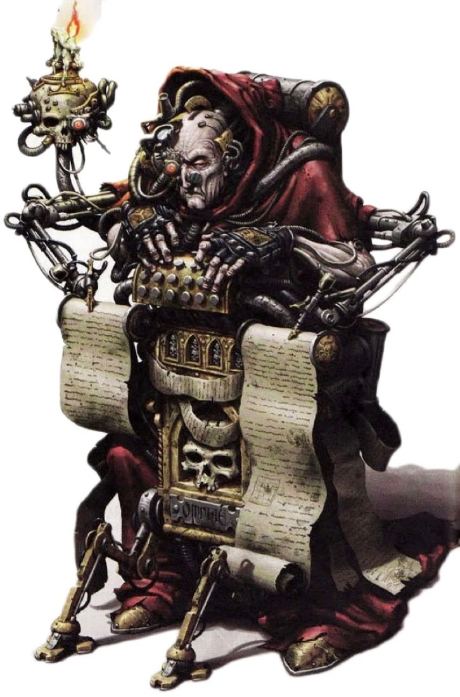

High Gothic
| High Gothic Lingua Imperialis | |
|---|---|
 A scribe of the Administratum records an edict in High Gothic Artwork © Games Workshop | |
| Pronunciation | Formal, chanted in liturgy |
| Native to | Terra (historically) |
| Era | Dark Age of Technology (c. M15–M25) to present; liturgical only since c. M32 |
| Speakers | No native speakers; second language of the Adeptus Terra, the Ecclesiarchy, the Inquisition and the nobility |
| Language family | Terran Gothic group |
| Early forms | Terran common tongue of the Age of Technology |
| Descendants | Low Gothic and its dialects; Lingua-technis (in part) |
| Official status | |
| Official language in | Imperium of Mankind (law, liturgy, titles) |
| Regulated by | Administratum and Adeptus Ministorum |
| Writing system | Imperial script (black-letter and copperplate hands) |
High Gothic, also called Imperial Gothic, Imperial Terran or, in formal documents, Lingua Imperialis, is the hieratic language of the Imperium of Mankind. It is the language of Imperial law, of the liturgy of the Imperial Cult, of the formal titles of the Imperial institutions (the Adeptus Terra, the Adeptus Astartes, the Astra Militarum) and of the oldest surviving records of the Great Crusade. It has had no native speakers for at least ten thousand years. It is learnt as a second language by adepts, priests, Inquisitors, officers and the planetary nobility, and is unintelligible to almost all of the Imperium's ordinary citizens, who speak Low Gothic.[1][2]
High Gothic descends from the common tongue of Terra in the Age of Technology, a merged language spoken across the human interstellar civilisation before the Age of Strife. It was the working language of the Emperor of Mankind and his court during the Unification Wars (c. M30) and the Great Crusade (c. 798.M30–005.M31). After the Horus Heresy it fell out of daily use and became fixed as a sacred and legal register. The Ecclesiarchy regards it as holy because it was the speech of the Emperor; the Adeptus Mechanicus preserves a technical form of it, which it calls "Tech", in its rituals and archives.[2][3]
Name
[edit]The name "High Gothic" is a later coinage that sets the old language against the "low" vernacular. Records of the Great Crusade call it simply Imperial, Imperial Terran or Imperial Gothic. The Administratum uses Lingua Imperialis in its own registers. In everyday speech the word "Gothic" on its own usually means Low Gothic, and the term "Imperial Gothic" is applied to both languages in different archives, which has caused frequent confusion in Imperial scholarship.[2][a]
History
[edit]Origins in the Age of Technology
[edit]Imperial linguists trace High Gothic to the common language of Terra in the Dark Age of Technology (c. M15–M25). That language was itself a fusion of several older Terran tongues of the northern continents and the Pacific littoral, which had merged over many centuries of global government. During the age of human expansion it became the written medium of the whole interstellar civilisation: it was the language of the Standard Template Construct databases, of navigation and of law, and it was spoken as a first language by many colonists and as a second language by almost all.[2]
The Age of Strife
[edit]The Age of Strife (c. M25–M30) broke the human worlds apart. Cut off from Terra by warp storms, colonies developed their own forms of speech, and on many worlds the common tongue survived only in technical manuals, ship logs and the formulae of priesthoods. On Terra itself the language persisted among the techno-barbarian warlords and the scholars of the Himalazian strongholds, and on Mars it was kept, in a frozen and specialised form, by the Cult Mechanicus.[2][4]
The language of the Emperor
[edit]The Emperor of Mankind used the old common tongue as the language of his government during the Unification Wars (c. M30) and imposed it as the language of command on the Thunder Warriors and, later, on the Space Marine Legions. The Treaty of Olympus (c. 798.M30) with Mars was drafted in it. During the Great Crusade (c. 798.M30–005.M31) it was carried to every world brought into compliance, and the Remembrancer Order wrote its chronicles in it. Imperial records of the period treat it as a living language: officers, iterators and remembrancers spoke it among themselves, and its vocabulary grew to absorb the terms of newly found worlds.[5][4]
Fixation after the Heresy
[edit]The Horus Heresy (005–014.M31) and the Great Scouring ended the language's life as everyday speech. In the centuries after the Emperor's interment on the Golden Throne in 014.M31, the vernacular of the Imperium continued to change, while the speech of the Emperor's court was held fixed in law and liturgy. By the 32nd millennium the two had diverged far enough to be treated as separate languages. The early Ecclesiarchy, which became an institution of the Adeptus Terra in the mid-M32, adopted the old tongue as its liturgical language and taught that it was sacred because the Emperor had spoken it. Imperial historians date the name "High Gothic" to this period, though the earliest surviving use of the term is in an Administratum register of c. 450.M32.[3][4][b]
The Age of Apostasy
[edit]During the Reign of Blood (early M36 to c. 288.M36) the High Lord Goge Vandire used the opacity of High Gothic to his advantage. His edicts were issued only in the liturgical tongue, and many populations obeyed laws they could not read. The reforms of Sebastian Thor after 288.M36 encouraged the preaching of the Imperial Creed in the vernacular of each world, a practice Ecclesiarchal histories call the vulgar sermon. High Gothic was kept for the liturgy itself and for Ecclesiarchal law.[3]
The Era Indomitus
[edit]After the return of Roboute Guilliman in 999.M41, the Logos Historica Verita was charged with recovering the Imperium's history, and much of its work has been the reading of Great Crusade documents in their original High Gothic. Guilliman, who learnt the language as a living tongue in the 30th millennium, has been reported to correct the liturgical pronunciation of priests, and the Logos has published glossaries that distinguish Crusade usage from later accretions. These efforts are recorded from about 003.M42.[6][4]
Use
[edit]Law and government
[edit]Every formal act of the High Lords of Terra, every Warrant of Trade, every writ of the Adeptus Arbites and every tithe assessment of the Administratum is issued in High Gothic. A translation into Low Gothic usually accompanies it, but in a dispute only the High Gothic text has force. The titles of Imperial bodies are fixed in the language: Adeptus Terra, Officio Assassinorum, Departmento Munitorum, Navis Nobilite.[1]
Liturgy
[edit]The masses, litanies and hymns of the Imperial Cult are sung in High Gothic. Congregations commonly learn the responses by rote without knowing their meaning. Prayer formulae such as Ave Imperator ("Hail, Emperor") and Imperator Vult ("the Emperor wills it") have passed into common speech. The Adepta Sororitas and the priesthood are taught the language in the schola progenium and in seminaries, and Ecclesiarchal law requires a confessor to be able to recite the canon in it.[3]
The Adeptus Mechanicus
[edit]The tech-priests of Mars use a technical register of High Gothic, which they call "Tech", for rites of maintenance and for their oldest archives. Mechanicus records hold that Tech preserves the true form of the Age of Technology language and that the Terran form is corrupted. For communication among themselves, adepts prefer the binary Lingua-technis and the compressed Binaric cant.[7]
The military
[edit]The Adeptus Astartes learn High Gothic during their indoctrination, and many Chapters use it for oaths, battle-rites and command codes. Officers of the Astra Militarum and the Imperial Navy are expected to read it, and Commissars read the articles of war in it before executions. Guardsmen generally know only a handful of phrases.[8]
Features
[edit]High Gothic is highly inflected, with grammatical cases, gendered nouns and a rich verbal system. Its vocabulary is mostly Terran, with a heavy element drawn from older classical languages of Terra, which supplies most of its titles and legal terms. Word order is free. Formal texts use long compound titles and ritual repetitions, and liturgical texts are usually chanted on fixed tones.[2]
| High Gothic | Low Gothic meaning | Use |
|---|---|---|
| Ave Imperator | Hail, Emperor | Liturgical greeting; salute |
| Imperator Vult | The Emperor wills it | Close of decrees; battle cry |
| Adeptus | One who has attained | Title of the Imperial institutions |
| Exterminatus | Extermination | Order to destroy a world (see Exterminatus) |
| Imperium Humanus | Empire of Mankind | Formal name of the Imperium of Mankind |
| Suffer not the witch to live | Kill the witch | Common rendering of an Ecclesiarchal canon |
Dialects and registers
[edit]- Terran Court High Gothic: the pronunciation taught in the Imperial Palace and regarded as standard.
- Ecclesiarchal High Gothic: the sung register of the liturgy, with a simplified grammar and archaic vowels.
- Tech: the Martian register used by the Adeptus Mechanicus.
- Crusade High Gothic: the living language of c. 798.M30–014.M31, studied by the Logos Historica Verita since 999.M41.
Timeline
[edit]| Date | Event |
|---|---|
| c. M15–M25 | Terran common tongue spreads with human colonisation |
| c. M25–M30 | Age of Strife; the language survives in records and on Mars |
| c. M30 | Language of the Emperor's government in the Unification Wars |
| c. 798.M30 | Treaty of Olympus drafted in Imperial Terran |
| 014.M31 | End of the Horus Heresy; the court language begins to fall from daily use |
| c. 450.M32 | Earliest surviving use of the name "High Gothic" |
| c. 288.M36 | Reforms of Sebastian Thor require vernacular preaching |
| c. 003.M42 | Logos Historica Verita publishes its first Crusade glossaries |
See also
[edit]Notes
[edit]- ^ The Logos Historica Verita recommends "High Gothic" for the liturgical language and "Low Gothic" for the vernacular, and uses "Imperial Gothic" only when quoting older sources.
- ^ Date estimated from the sequence of events; the register is the oldest dated source known to the Logos Historica Verita.
References
[edit]- ^ a b Priestley, Rick. Warhammer 40,000: Rogue Trader (1st Edition). Black Library.
- ^ a b c d e f Priestley, Rick. Warhammer 40,000: Rogue Trader (1st Edition). Black Library.
- ^ a b c d Priestley, Rick. Warhammer 40,000: Rogue Trader (1st Edition). Black Library.
- ^ a b c d Priestley, Rick. Warhammer 40,000: Rogue Trader (1st Edition). Black Library.
- ^ Priestley, Rick. Warhammer 40,000: Rogue Trader (1st Edition). Black Library.
- ^ Priestley, Rick. Warhammer 40,000: Rogue Trader (1st Edition). Black Library.
- ^ Priestley, Rick. Warhammer 40,000: Rogue Trader (1st Edition). Black Library.
- ^ Priestley, Rick. Warhammer 40,000: Rogue Trader (1st Edition). Black Library.